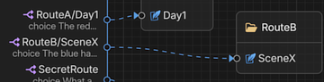
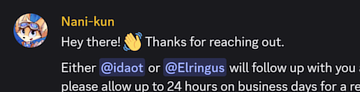
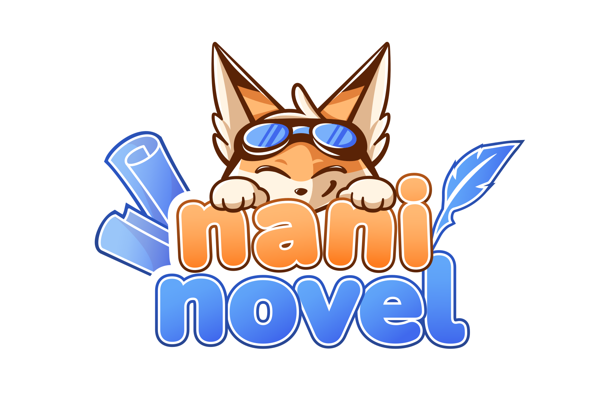

Scripting for writers
Author stories in text documents using NaniScript or in the visual Story Editor — no programming required. Branching, variables and conditions are all built in.

Shaped over a decade by thousands of authors crafting interactive fiction of every kind.
Naninovel is an all-in-one suite for interactive storytelling, continually evolving through annual releases since 2018.
Author stories in text documents using NaniScript or in the visual Story Editor — no programming required. Branching, variables and conditions are all built in.

Complete UI, save and load, state rollback, backlog, localization, auto-voicing, CG gallery, dialogue triggers and dozens of other systems are included and ready to use.
@unlock CG/Rooftop ; into the gallery @save ; autosaved
Proven in production on hundreds of titles shipped to PC, consoles and mobile, Naninovel is an industry standard for studios of any size, from solo creators to publishers.
Use Naninovel as a visual novel template or enable Dialogue Mode and drop it into an existing project to add branching dialogues and cutscenes to a game of any genre.
Dialogue.EnterAndPlay("Talk"); // from C# @exitDialogue ; back to the game
Priority support, source code access, GitHub-based installation and an LTS stream — your license includes 1 year of the Support Plan and permanent access to all future releases.

Every built-in feature can be extended, overridden or replaced via a simple prefab tweak or a clean C# API — the engine's architecture is modular by design.
class Wave : Command { } // define in C# @wave ; now a script command
Explore notable features in a 3-minute video trailer.
Amazing games built with Naninovel are released on every major platform.
Check out the free demos — no Unity install or download required.
What developers wrote about Naninovel, in their own words.
I find Naninovel very useful for different kinds of multimedia projects. It has the right combination of tools I need: cohesive framework; comprehensive API; good scripting support; integration with Unity.
This asset is very user-friendly and won't require much programming if any at all for the most simple and usually most common visual novels. However it can be customized and expanded upon for more specific cases, making it overall a very versatile tool.
Developer is very active and responsive; they're the easiest to contact developer I've had opportunity to work with on the Unity Asset Store. The mini-scripting language used to write Naninovel Novels is straightforward and, once you pick up and understand a few of its quirks, painless.
Naninovel does away with the node-based workflow of many other tools, replacing it with a very clear, readable script style approach to writing dialogue and directing the scene. It goes above and beyond many other VN/narrative tools for Unity with built in visual novel features.
I have tried many different visual novel solutions for Unity during the past years and no question about it: Naninovel is the best of all of them. It uses a simple script language that won't be too much a trouble to understand once you start working with it.
I've tried every VN asset I could get my hands on, and this one is by far the smartest and most friendly to a novice like myself. The documentation is thorough and the support is EXCELLENT.
Being a professional 3D Artist I really appreciate the wide range of ready-made effects that can be applied to the backgrounds and chars, and the ease of animating & manipulating the character sprites. Auto voicing is also super feature if you have voice overs!
I'm a writer/designer with 4 years of experience writing commercial visual novels in the mobile games industry. In my opinion, Unity+Naninovel blows them all out of the water. By a lot. It's not even close.
While it's obvious from the outset that the asset is both usable and powerful, what isn't as obvious until after you have access to it is its service architecture makes the library extremely flexible and extensible. It's the very model of what a good library should be.

A license includes one year of the Support Plan and every future release.